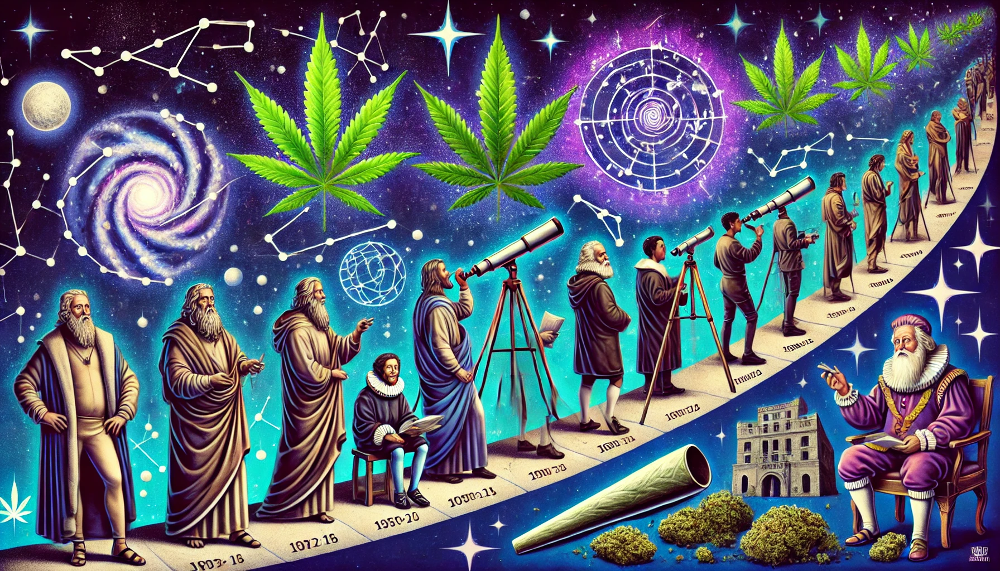
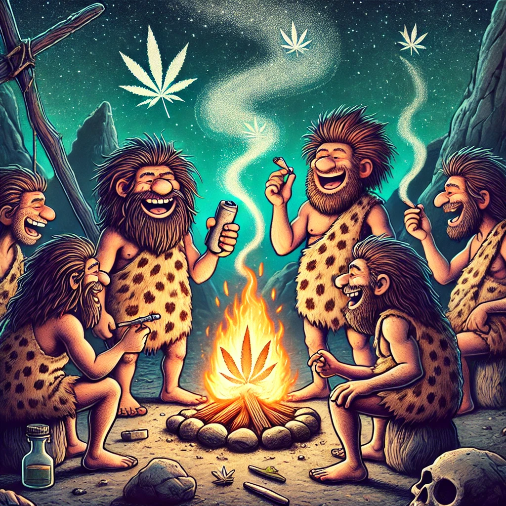
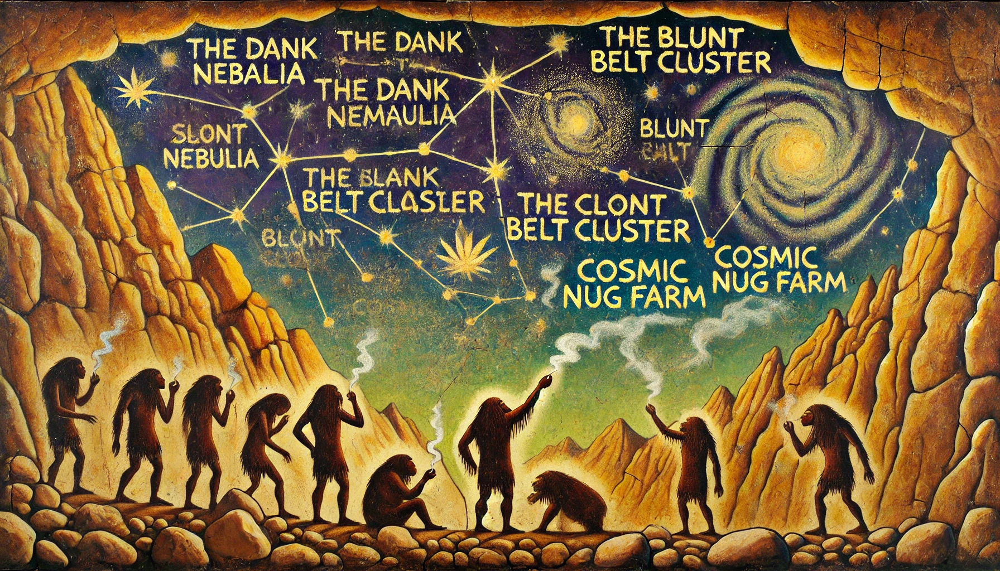
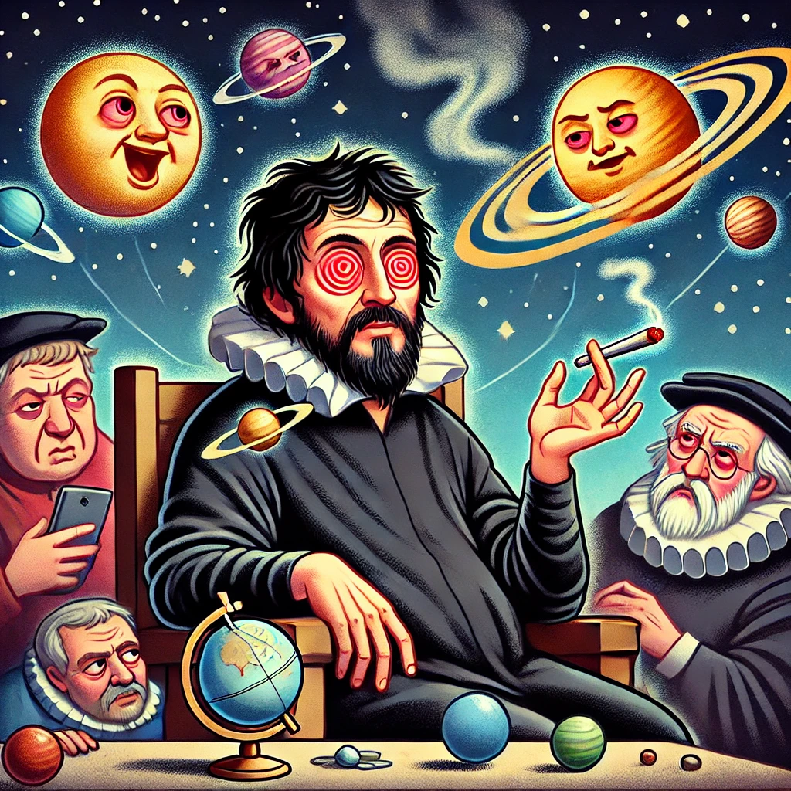
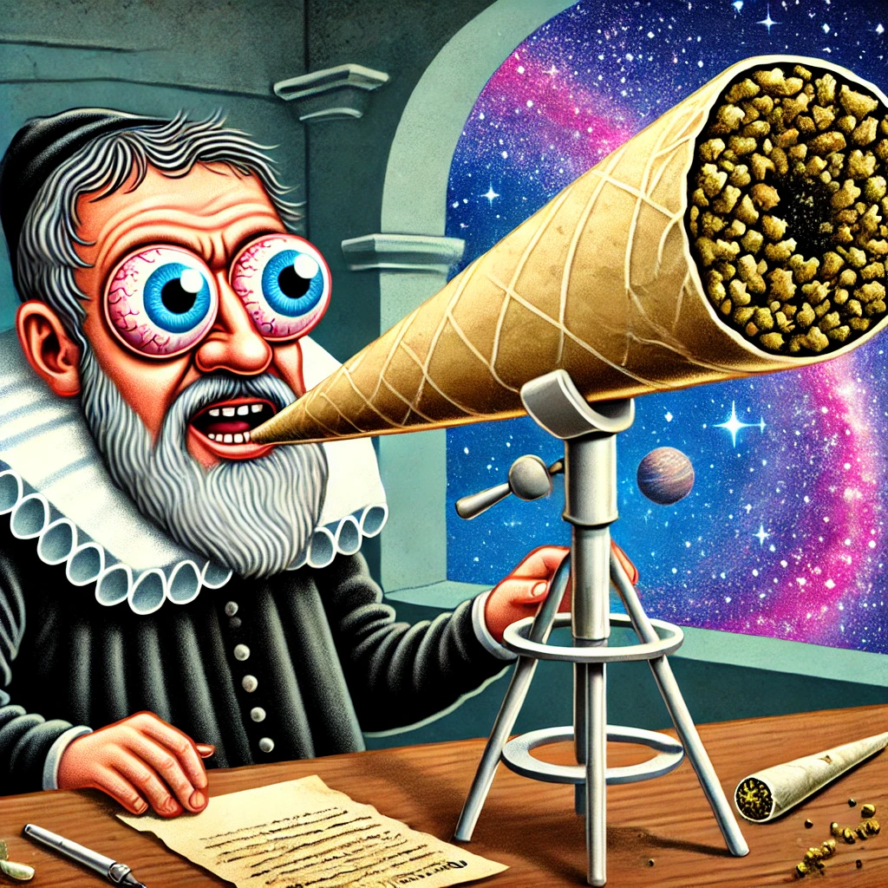
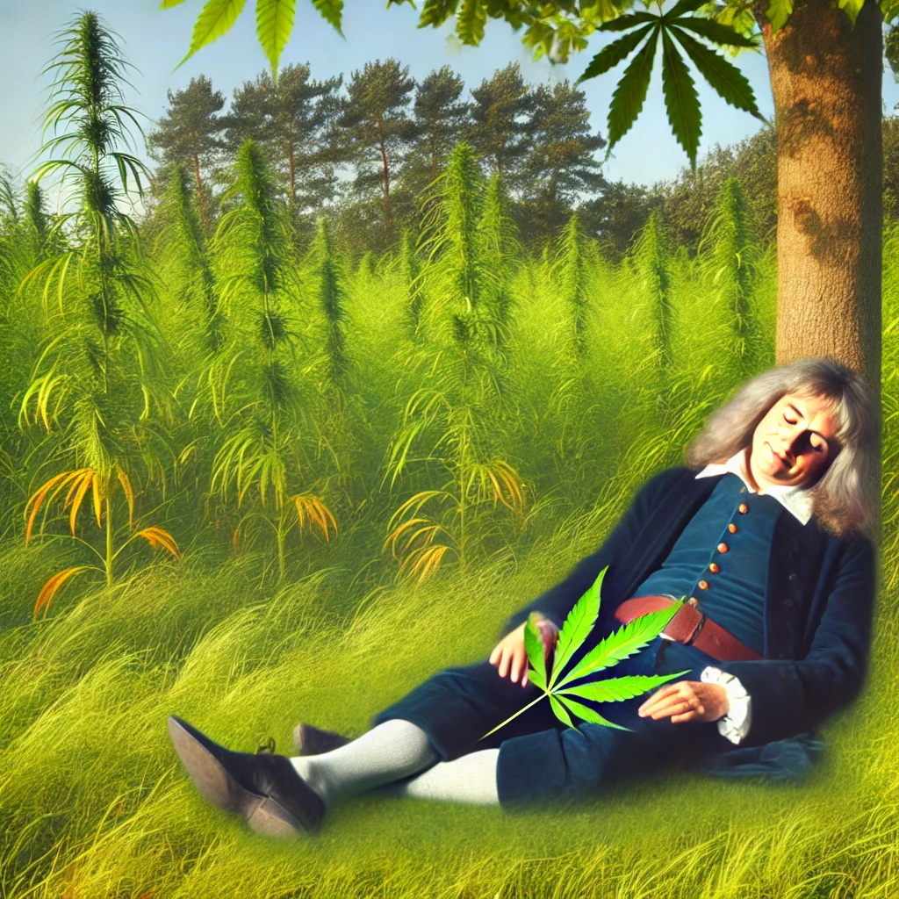
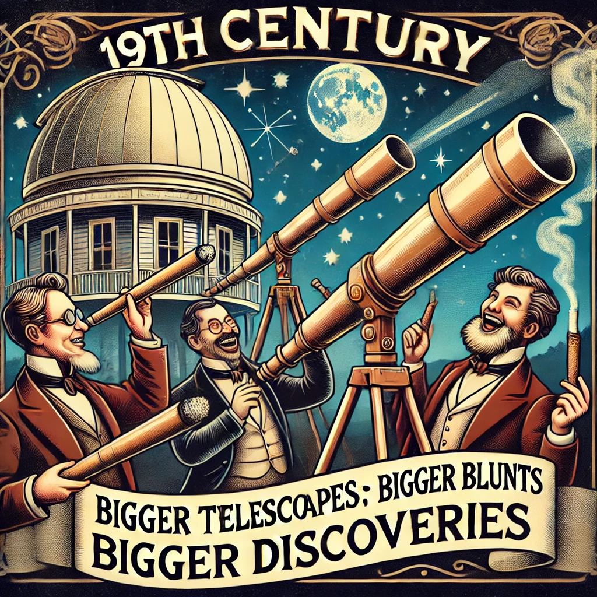
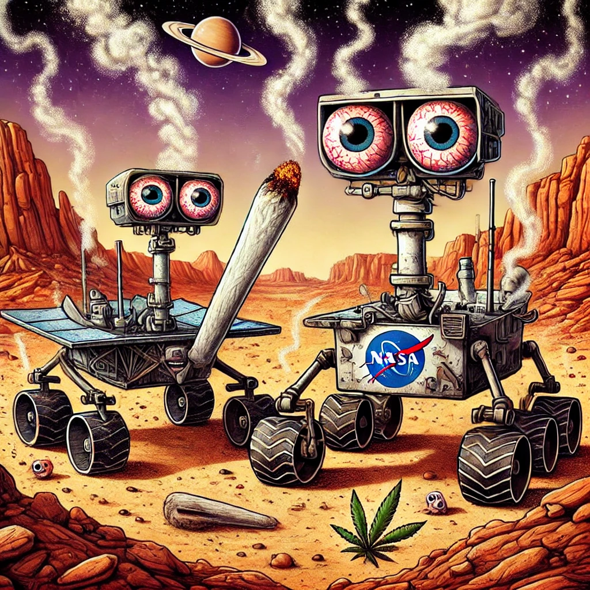

HISTORY OF ASTRONOMY.
Astronomy has a long, fascinating history full of discoveries and cosmic wonder, but who says it has to be boring? Let’s look at the history of astronomy with a stoner twist:
1. ANCIENT OBSERVATIONS: STARGAZING, THE ORIGINAL ENTERTAINMENT STATION
Thousands of years ago, early humans would look up at the night sky, mostly because there was no TV, Wi-Fi or TikTok to distract them. They noticed twinkling lights, and someone probably said, “Hey, let’s call that cluster The Nug farm!” Thus, constellations were born, named after whatever people thought they saw after a few ancient doobies.
2. ANCIENT GEEKS, I MEAN GREEKS: PHILOSOPHERS AND THEIR BIG CELESTIAL THOUGHTS

The Greeks were all about deep thinking, whether it was Plato asking, "why..?" or Pythagoras inventing math just because his dealer was gone missing and he was bored and wanted to make everyone suffer in school for centuries. One philosopher, Aristotle, believed the Earth was the center of the universe(had to be a stoner!). This idea was supported because everyone at the time was stoned, "We’re so great, why wouldn’t we be the center?"Ptolemy refined this strain and said, “It’s not just the Earth in the middle, the planets do this cool loop-de-loop dance around us.” It made as much sense as someone explaining cryptocurrency today.
3. COPERNICUS: THE GUY WITH THE BUZZ KILL
Fast forward to the 16th century, and here comes Nicolaus Copernicus, the original. He dared to suggest that the Sun was actually the center of the universe, not Earth. This revelation caused a collective “What?!” that echoed through Europe. People were so mad, they probably unfriended him in real life.
4. GALILEO: THE OG SCIENCE INFLUENCER
Galileo Galilei took things up a notch by pointing a telescope at the sky, we think, from a bud farm, and discovering that Jupiter had moons and Venus had phases. He basically told everyone, “Hey, I’ve got great weed, and the universe doesn’t revolve around us!” The Church at the time was like, “Delete your account or else,” and put him under house arrest. Galileo’s response? He mumbled, “And yet it moves,” basically the Renaissance version of a subtweet.
5. ISAAC NEWTON: THE Bud GUY BEFORE Bud WAS COOL
Sir Isaac Newton came along and decided to show off by explaining gravity after a bud bonked him on the head when he was chillin’ on a bud farm smoking dope weed. He not only confirmed that planets moved around the Sun because of gravity but also low-key invented calculus while he was at it. He was like, “Oh, you thought you understood the universe? Here’s some math that’ll make your head hurt.”
6. 19TH CENTURY: BIGGER TELESCOPES, BIGGER BLUNTS, BIGGER DISCOVERIES
Astronomers in the 1800s thought, “We need to see more stuff,” so they built bigger telescopes. This led to the discovery of planets like Neptune, which was found when one astronomer noticed Uranus was off in its orbit. (Yes, that’s where the jokes start.)
7. EINSTEIN: RELATIVELY GENIUS

Enter Albert Einstein (Al to his mates.), who took Newton’s bud from the blunt museum and basically said, “This Bud is really old and dried out." He also said, "Gravity’s actually bending space-time, not just pulling buds.” Everyone else said, “What’s space-time?”Al replied, “You’re welcome,” and he wandered off with someone’s stash, leaving them more confused than before. Some say he was on the bong.
8. MODERN ASTRONOMY: NOW WITH MORE EXPLOSIONS!!!

Fast forward to the 20th century, where Edwin Hubble discovered that the universe was expanding. He basically looked up and thought, “Whoa, who’s got my pipe? And all these galaxies are running away from us. Did we say something?” There is no proof that Eddie was a smoker, or maybe there is, I haven't looked so I don't know.....BUT, he definitely likes his pipe! Today, astronomers use telescopes like Hubble, named after Eddie, and other space telescopes to spy on distant galaxies, black holes, and things that blow up in space. Somewhere in a distant corner, a black hole devours stars like it’s an all-you-can-eat buffet, and we say, “thank fuck that’s not here!”
9. ASTRONOMY TODAY: COSMIC COMEDY GOLD
Now, we send robots to Mars and give them cute names like Curiosity and Perseverance. We land them on other planets and make them do robot TikTok dances (well, sample rocks and roam around). Astronomers today still argue about Pluto’s planetary status—basically the cosmic equivalent of debating is a Jaffa cake a biscuit or a cake. Should be renamed a "Biscake," eat too many and you get a biscuit tummy ache!!!
From ancient folks trying to connect dots in the sky to modern scientists sending selfies from space, astronomy has come a long way. And if there’s one lesson we’ve learned, it’s that strains of bud are infinite, the universe is vast, mysterious, and occasionally hilarious, especially when we realize we’re still just a tiny speck floating through it all, making memes and wondering if aliens have better Wi-Fi…..and or better weed!